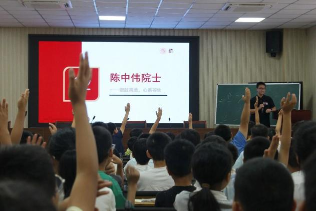

7月21日上午，舒城县千人桥小学报告厅内气氛热烈，我们在这里开启了一场别开生面的理论宣讲。
讲台上的PPT一页页翻过，吴辰呈和张敏行没按“照本宣科”的套路来，而是把一位位院士的故事，揉进了通俗的对话和生动的角色扮演中。孩子们听得入了神，一有提问就举起了一片小手。面对那些稚嫩却真诚的提问，原本严肃的宣讲，变成了一场热络的“你问我答”。
看着孩子们亮晶晶的眼睛，实践团成员们意识到，这不仅仅是一场单向的宣讲，更是一颗颗关于勇气与信念的种子，在童心里完成了最真实的传递。
 山海有回声博医计划 · 实践纪实互动影像库浏览影像
山海有回声博医计划 · 实践纪实互动影像库浏览影像 实践现场 012 / 018
六安 · 舒城县千人桥小学

7月21日上午，舒城县千人桥小学报告厅内气氛热烈，我们在这里开启了一场别开生面的理论宣讲。
讲台上的PPT一页页翻过，吴辰呈和张敏行没按“照本宣科”的套路来，而是把一位位院士的故事，揉进了通俗的对话和生动的角色扮演中。孩子们听得入了神，一有提问就举起了一片小手。面对那些稚嫩却真诚的提问，原本严肃的宣讲，变成了一场热络的“你问我答”。
看着孩子们亮晶晶的眼睛，实践团成员们意识到，这不仅仅是一场单向的宣讲，更是一颗颗关于勇气与信念的种子，在童心里完成了最真实的传递。